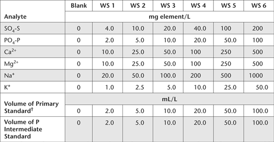

ICPAES is a proven analytical finish for the simultaneous multi-elemental determination of cations, and anions such as SO42– and HPO42– in aqueous solutions. This method describes reagents and procedures for the determination of SO4-S and the simultaneous determination of PO4-P. It also covers the determination of soluble bases (Ca2+, Mg2+, Na+, K+) in SE of soils.
Reagent Water
As for Method 14E2a.
Sulfur Primary Standard
1 L contains 2000 mg of SO4-S.
Dissolve 4.1214 g ammonium sulfate [(NH4)2SO4; previously dried at 105°C for 4 h] in deionised water and make to 500 mL in a volumetric flask. Add 2 drops of chloroform (CHCl3) to prolong shelf life and store at ≈4°C.
Other Primary Standards (P, Ca, Mg, Na, K)
A certified standard solution of 10 000 mg P/L is recommended as the P Primary Standard, from which a P Intermediate Standard of 1000 mg P/L should be prepared by 1:10 dilution. Also prepare Primary Standards for Ca, Mg, Na and K as described in Method 14H1. Primary Standards containing S and Ca should not be combined, due to the likelihood of precipitation at the specified concentrations.
Mixed Working Standards
See Table 14.6 for guidance on the preparation and elemental concentrations (mg/L) of Mixed Working Standards. Primary Standards are required for S, Ca, Mg, Na and K, while an Intermediate Standard (1000 mg P/L) is used for P. Dispense these solutions using an A grade calibrated micro-burette (10 mL) or 50 mL burette. Each Working Standard and the calibration blank should include 10 mL of 10 M HCl/L (see Note 1).
Table 14.6. Volumes (mL) of Primary and Intermediate Standards to prepare 1.0 L volumes of Mixed Working Standards (WS) for SO4 -S, PO4-P, Ca2+, Mg2+, Na+ and K+, plus resultant elemental concentrations (mg/L).

†These volumes apply to all Primary Standards apart from P. Refer to Method 14H1 for details on the preparation and concentrations of Primary Standards for Ca, Mg, Na and K.
Table 14.7. Suggested dilution ratios for SE before running on an ICPAES.
Conductivity range (dS/m) |
Dilution ratio |
5–10 |
1:2 (1+1 with Reagent Water) |
>10–25 |
1:5 (1+4 with Reagent Water) |
>25–50 |
1:10 (1+9 with Reagent Water) |
>50 |
1:20 (1+19 with Reagent Water) |
Dilute SE to an EC <2 dS/m (before running on the ICPAES) to reduce total dissolved salts and to give enough sample for analysis and repeats if required. Use Table 14.7 as a guide to dilutions.
Filter (≤0.45 μm pre-washed PES filter or equivalent and preferably ≤0.20 μm) ≈20 mL of diluted SE into a 50 mL polypropylene tube and transfer a suitable volume into an auto-sampler tube for ICPAES analysis. An ICPAES with simultaneous or fast sequential operation is preferred. Set up instrument according to manufacturer’s instructions, and determine concentrations of SO4-S, PO4-P, Ca2+, Mg2+, Na+ and K+ in mg/L or cmolc/L as required. Make due allowance for any significant method blank if applicable.
For a VarianVista Pro™ ICPAES (as an example), the following wavelengths are suggested and the practical quantitation limits shown should be achievable (see Table 14.8).
Report SO4-S (mg/L) in SE with relevant method codes. Divide by 16.03 to convert mg SO4-S/L to cmolcSO4-S/L.
1. Dilute HCl is included to extend the operational life of Mixed Working Standards, especially when prepared in combination with other elements. At the concentration specified, this acid has no effect on nebulisation during analysis by ICPAES.
Table 14.8. Suggested analytical wavelengths and practical quantitation limits that can be expected using a modern ICPAES.
Element |
Wavelength (nm) |
PQL (mg/L) |
SO4-S |
181.97 |
0.30 |
PO4-P |
213.62 |
0.13 |
Ca2+ |
393.37 |
0.09 |
Ca2+ |
430.25 |
0.28 |
Mg2+ |
285.21 |
0.02 |
Na+ |
588.99 |
0.27 |
K+ |
766.5 |
0.60 |